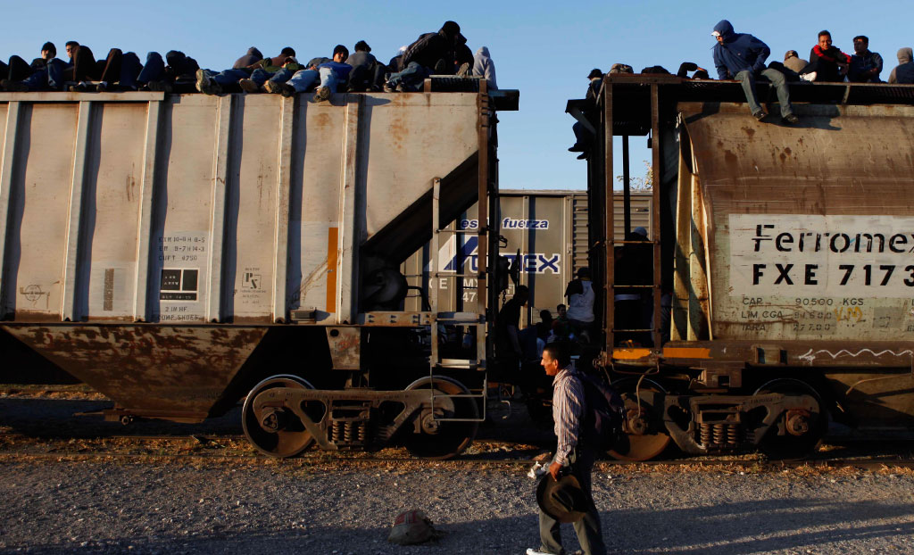
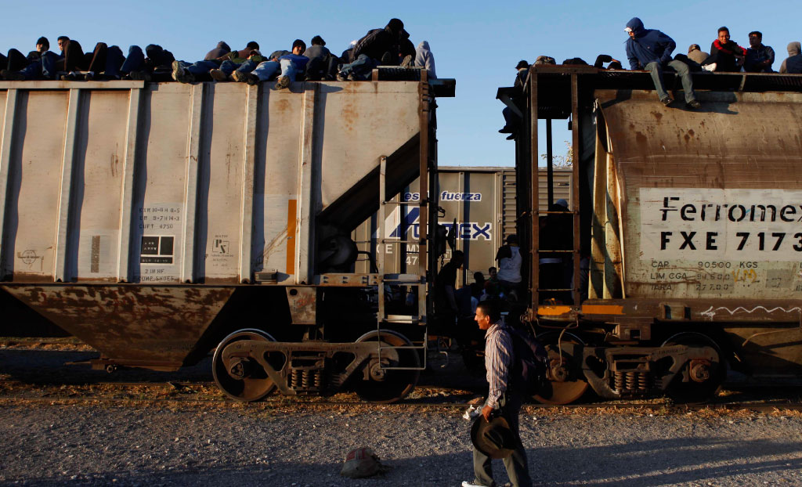

LUNES A VIERNES_22 HRS


El 24 de agosto de 2010, 72 cuerpos fueron encontrados sin vida en una bodega de San Fernando, Tamaulipas. Todos eran migrantes sudamericanos: 58 hombres y 14 mujeres yacían en el suelo con las manos atadas y un tiro de gracia. Fueron asesinados por el grupo criminal de Los Zetas cuando intentaban llegar a Estados Unidos con la esperanza de encontrar una vida digna. Aunque los motivos de esta masacre no han sido aclarados, la fragilidad de los extranjeros que cruzan el país sin papeles quedó al descubierto en una herida profunda.
A pesar de la conmoción que puede causar una noticia como la de San Fernando, la historia no es nueva. Tampoco es imposible que se repita. Los migrantes que cruzan por México para llegar a Estados Unidos conforman una de las comunidades más vulnerables del país: ni los estudiantes, ni los maestros, ni los indígenas, ni los campesinos, ni los obreros enfrentan el trato que reciben los migrantes. Son los invisibles, los que no tienen voz, los que parecen no existir ante los ojos de nadie. En su calidad de ilegales, quedan a merced de corrupciones de las autoridades, extorciones de grupos delictivos y expuestos a padecer cualquier cantidad de violaciones a derechos humanos.
Hace casi diez años, un equipo de investigación a cargo de Denise Maerker (compuesto por los reporteros Alberto Tinoco Guadarrama, Olivia Zerón, Yuli García, Rodolfo Zárate y Joaquín Fuentes) recorrió una de las rutas de migración ilegal que va de la frontera sur al límite con Estados Unidos y elaboró una serie de entregas en video. El resultado fue una narración escalofriante que, a falta de datos oficiales, da cuenta de un problema humanitario severo que no se ha resuelto aunque hayan pasado casi diez años.
A pesar de la conmoción que puede causar una noticia como la de San Fernando, la historia no es nueva. Tampoco es imposible que se repita. Los migrantes que cruzan por México para llegar a Estados Unidos conforman una de las comunidades más vulnerables del país: ni los estudiantes, ni los maestros, ni los indígenas, ni los campesinos, ni los obreros enfrentan el trato que reciben los migrantes. Son los invisibles, los que no tienen voz, los que parecen no existir ante los ojos de nadie. En su calidad de ilegales, quedan a merced de corrupciones de las autoridades, extorciones de grupos delictivos y expuestos a padecer cualquier cantidad de violaciones a derechos humanos.
Por medio de testimonios de migrantes, defensores de derechos humanos, sacerdotes y autoridades locales, el reportaje cuenta una historia sobre las penurias y los graves peligros que enfrentan las personas que pasan por nuestro país para llegar al norte. A pesar de que no existen cifras estables sobre el número de individuos que diariamente atraviesan México sin papeles, se calcula que más de 150 mil personas ingresan a nuestro país de manera ilegal al año con el fin de cruzar hacia Estados Unidos.
Cuando el equipo de reporteros comenzó su viaje en 2007, Tenosique era un lugar inhóspito e ignorado por las autoridades. Se trataba de una de las fronteras con mayor marginación de la zona. Desde el 15 de abril de 2011, ese panorama ha cambiado un poco: el Movimiento Migrante Mesoamericano abrió La 72, Hogar Refugio para Personas Migrantes (cuyo nombre rememora a los migrantes de San Fernando) en La Palma, comunidad del municipio tabasqueño. En este sitio hay camas, comida y atención médica para recibir a cientos de hondureños, guatemaltecos, salvadoreños y nicaragüenses que pasan por ahí cada día en su camino hacia la frontera.

La segunda parada de la investigación fue en Tutltitlán, Estado de México, donde se encuentra la estación de trenes Lechería. Aunque en México sólo hay dos servicios ferroviarios que transportan pasajeros de manera oficial (El Chepe, en Chihuahua y el Tequila Express, en Jalisco) existe una tercera compañía que traslada personas ilegalmente: el Ferromex, también conocido como La Bestia.
Los migrantes que abordan los techos de ese tren sufren toda clase de peligros: insolaciones, hipotermias, caídas, mutilaciones, asaltos, violaciones y demás. Como los viajantes embarcan el tren clandestinamente, si hay un accidente (el tren se puede descarrilar o chocar, por ejemplo) nadie lleva un conteo de las personas que viajan en el techo, muchas veces ni siquiera es posible conseguir información para dar aviso a las familias si hay heridos graves o, en caso de muerte, identificar los cuerpos.
Estas duras condiciones de vida no sólo afectan a los migrantes, sino también a personas que buscan ayudarlos. Debido a la falta de información y al tamaño de la crisis que rodea a este grupo, muchas personas piensan que se trata de criminales que no deberían estar fuera de su país o que son vagos en busca de modos fáciles de vivir. Por estas razones es complicado mantener abiertos refugios y casas de asistencia.
Actualmente, por el municipio mexiquense pasan entre 100 y 150 migrantes cada día. En atención a sus necesidades, en 2009 se abrió la Casa del Migrante San Juan Diego, que dependía del salón parroquial de la Iglesia de San José Obrero en la Cerrada de la Cruz; sin embargo, debido a malos entendidos vecinales y a rumores de corrupción, cerró sus puertas en 2012 y se trasladó a Huehuetoca.
Para cuando algunos migrantes logran llegar a Celaya, Guanajuato (tercera parada de los reporteros), sus fuerzas han disminuido. Han perdido todo su dinero, muchos han sufrido lesiones y otros han desaparecido en el camino. No obstante, más de cien continuaban la travesía cada día en 2007.
En 2013, el gobierno del estado abrió el Instituto Estatal de Atención al Migrante Guanajuatense y sus familias, destinado sólo a apoyar a migrantes mexicanos que cruzan la frontera norte para conseguir empleo y mejorar la calidad de vida de sus familias. Afortunadamente, existe también el albergue Manos Extendidas, que atiende a los migrantes en tránsito, garantiza sus derechos humanos y les ofrece alimentación, higiene, seguridad y descanso.
La cuarta parada del reportaje fue en San Luis Potosí. Allí se encuentra la Casa del Migrante, que brinda protección y ayuda a los migrantes, que pueden pasar allí 24 horas, después de haber recorrido la mitad del viaje. A estas alturas del periplo el número de personas disminuye, pero la tenacidad de los sobrevivientes es aún mayor. La frontera está cada vez más cerca, aunque el escenario se vuelve más hostil conforme avanzan.
Por último, en Saltillo Coahuila los viajeros deben enfrentar el último de los obstáculos en México. Desde ese lugar el paso a la frontera norte es una realidad. La Casa del Migrante de ese estado ofrece atención a los migrantes y también promueve una agenda legal: por un lado buscan fortalecer el marco jurídico de protección a migrantes y, por otro, vigilar el ejercicio de presupuestos federales dedicados al cuidado de este sector de población que viaja por México en las condiciones más precarias.
 


La investigación periodística realizada en 2007 muestra una realidad que no ha mejorado diez años después. Cientos de personas se ven forzadas a abandonar sus lugares de origen para enfrentarse a una de las jornadas más peligrosas para cualquiera. La decisión de embarcarse en un viaje sobre La Bestia debe responder a necesidades urgentes de alimentación y sustento. Guatemala, Honduras, El Salvador o Nicaragua son países con profundos niveles de marginación y pobreza y, muchas veces, la única vía aparente para mejorar la calidad de vida es emigrar a los Estados Unidos de manera ilegal.
Gracias a un valiente grupo de reporteros que reprodujeron el viaje de los migrantes, sabemos qué clase de historias ocurren día con día en un México profundo que no es fácil vislumbrar. Pocas personas imaginan las penas que asumen quienes atraviesan nuestro país para llegar al norte del continente.
Incluso si son asesinados, los migrantes no encuentran descanso. A cinco años de la masacre de San Fernando, hay 11 cadáveres sin identificar. El sufrimiento de los migrantes se extendió a sus 72 familias. Los cuerpos que fueron repatriados tampoco regresaron a tiempo ni con las identificaciones forenses adecuadas. Todavía quedan muchas historias en espera de ser escuchadas: el reportaje que vimos en video es el inicio de una narración que aún no encuentra final.